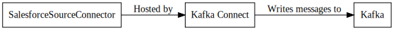

SalesforceSourceConnector¶
The SalesforceSourceConnector is used to read changes from Salesforce in realtime.
Configuration¶
| Name | Type | Importance | Default Value | Validator | Documentation |
|---|---|---|---|---|---|
| kafka.topic | String | High | The Kafka topic to write the SalesForce data to. This is a template driven by the data returned by Salesforce. Any field in the schema can be used but you should always pick a value that is guarenteed to be there. _EventType and _ObjectType are two metadata fields that are included on every record. For example you could put update and deletes in a different topic by using salesforce.${_ObjectType}.${_EventType} | ||
| salesforce.consumer.key | String | High | The consumer key for the OAuth application. | ||
| salesforce.consumer.secret | Password | High | The consumer secret for the OAuth application. | ||
| salesforce.object | String | High | The Salesforce object to create a topic for. | ||
| salesforce.password | Password | High | Salesforce password to connect with. | ||
| salesforce.password.token | Password | High | The Salesforce security token associated with the username. | ||
| salesforce.push.topic.name | String | High | The Salesforce topic to subscribe to. If salesforce.push.topic.create is set to true, a PushTopic with this name will be created. | ||
| salesforce.username | String | High | Salesforce username to connect with. | ||
| kafka.topic.lowercase | Boolean | High | true | Flag to determine if the kafka topic should be lowercased. | |
| salesforce.instance | String | High | The Salesforce instance to connect to. | ||
| connection.timeout | Long | Low | 30000 | [5000,…,600000] | The amount of time to wait while connecting to the Salesforce streaming endpoint. |
| curl.logging | Boolean | Low | false | If enabled the logs will output the equivalent curl commands. This is a security risk because your authorization header will end up in the log file. Use at your own risk. | |
| salesforce.push.topic.create | Boolean | Low | true | Flag to determine if the PushTopic should be created if it does not exist. | |
| salesforce.push.topic.notify.create | Boolean | Low | true | Flag to determine if the PushTopic should respond to creates. | |
| salesforce.push.topic.notify.delete | Boolean | Low | true | Flag to determine if the PushTopic should respond to deletes. | |
| salesforce.push.topic.notify.undelete | Boolean | Low | true | Flag to determine if the PushTopic should respond to undeletes. | |
| salesforce.push.topic.notify.update | Boolean | Low | true | Flag to determine if the PushTopic should respond to updates. | |
| salesforce.version | String | Low | latest | ValidPattern{pattern=^(latest|[d.]+)$} | The version of the salesforce API to use. |
Property based example¶
This configuration is used typically along with standalone mode.
name=connector1
tasks.max=1
connector.class=com.github.jcustenborder.kafka.connect.salesforce.SalesforceSourceConnector
# The following values must be configured.
kafka.topic=
salesforce.consumer.key=
salesforce.consumer.secret=
salesforce.object=
salesforce.password=
salesforce.password.token=
salesforce.push.topic.name=
salesforce.username=
kafka.topic.lowercase=
salesforce.instance=
connection.timeout=
curl.logging=
salesforce.push.topic.create=
salesforce.push.topic.notify.create=
salesforce.push.topic.notify.delete=
salesforce.push.topic.notify.undelete=
salesforce.push.topic.notify.update=
salesforce.version=
Rest based example¶
This configuration is used typically along with distributed mode. Write the following json to connector.json, configure all of the required values, and use the command below to post the configuration to one the distributed connect worker(s).
{
"name": "connector1",
"config": {
"connector.class": "com.github.jcustenborder.kafka.connect.salesforce.SalesforceSourceConnector",
"kafka.topic":"",
"salesforce.consumer.key":"",
"salesforce.consumer.secret":"",
"salesforce.object":"",
"salesforce.password":"",
"salesforce.password.token":"",
"salesforce.push.topic.name":"",
"salesforce.username":"",
"kafka.topic.lowercase":"",
"salesforce.instance":"",
"connection.timeout":"",
"curl.logging":"",
"salesforce.push.topic.create":"",
"salesforce.push.topic.notify.create":"",
"salesforce.push.topic.notify.delete":"",
"salesforce.push.topic.notify.undelete":"",
"salesforce.push.topic.notify.update":"",
"salesforce.version":"",
}
}
Use curl to post the configuration to one of the Kafka Connect Workers. Change http://localhost:8083/ the the endpoint of one of your Kafka Connect worker(s).
curl -s -X POST -H 'Content-Type: application/json' --data @connector.json http://localhost:8083/connectors